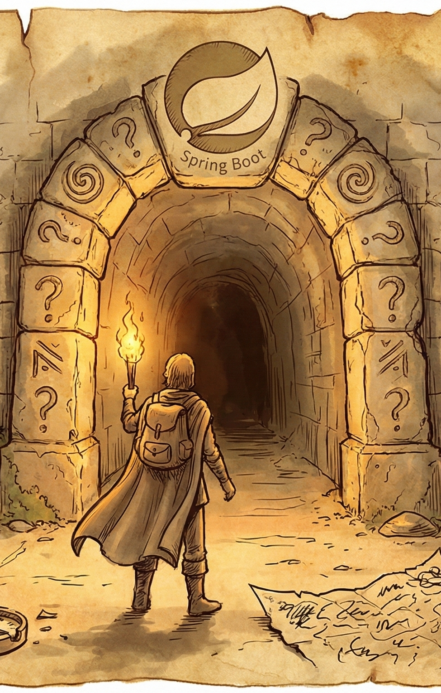
Go to menti.com and use the code 4469 9652 to anonymously submit answers for the quizzes and add your questions.
Start with the first three questions:
At the end of the Menti, you can add your questions for the Q&A session.
Imagine seeing this pull request on a Friday afternoon:
How confident are you to merge this major Spring Boot upgrade and deploy it to production once the pipeline turns green?
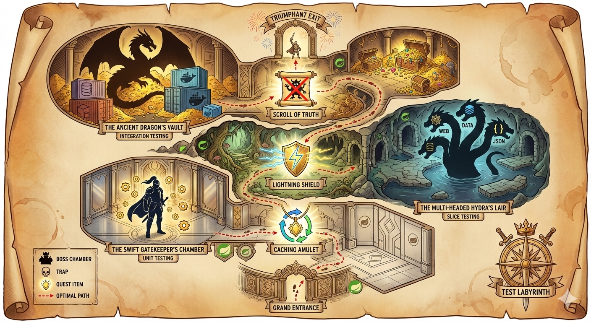
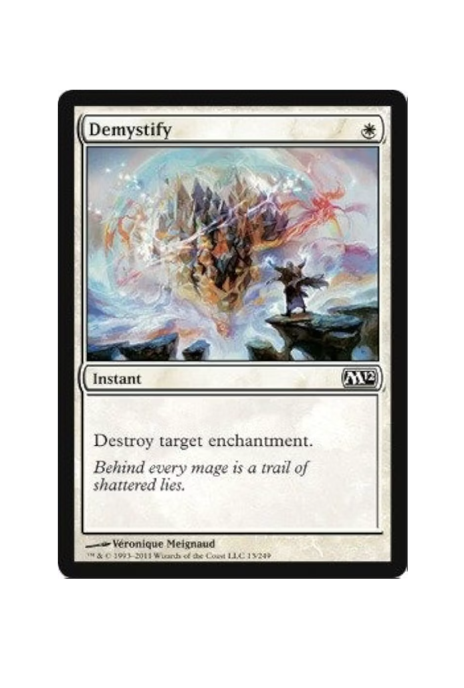
Testing Spring Boot applications can feel like entering a labyrinth blindfolded:
@SpringBootTest, @WebMvcTest,
@DataJpaTest, @MockBean, etc.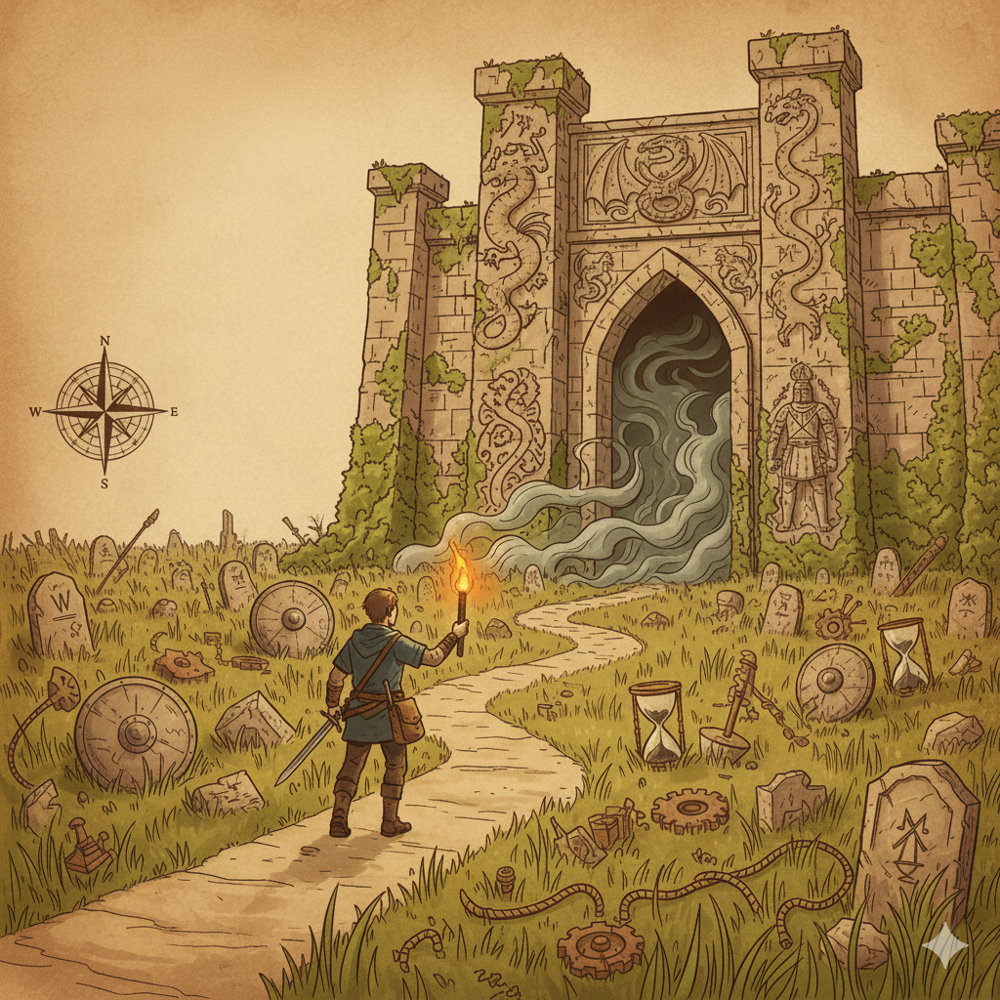
Swiss Army Knife
<dependency>
<groupId>org.springframework.boot</groupId>
<artifactId>spring-boot-starter-test</artifactId>
<scope>test</scope>
</dependency>./mvnw dependency:tree
[INFO] ...
[INFO] +- org.springframework.boot:spring-boot-starter-test:jar:4.0.2:test
[INFO] | +- org.springframework.boot:spring-boot-test:jar:4.0.2:test
[INFO] | +- org.springframework.boot:spring-boot-test-autoconfigure:jar:4.0.2:test
[INFO] | +- com.jayway.jsonpath:json-path:jar:2.10.0:test
[INFO] | | \- org.slf4j:slf4j-api:jar:2.0.17:compile
[INFO] | +- jakarta.xml.bind:jakarta.xml.bind-api:jar:4.0.4:test
[INFO] | | \- jakarta.activation:jakarta.activation-api:jar:2.1.4:test
[INFO] | +- net.minidev:json-smart:jar:2.6.0:test
[INFO] | | \- net.minidev:accessors-smart:jar:2.6.0:test
[INFO] | | \- org.ow2.asm:asm:jar:9.7.1:test
[INFO] | +- org.assertj:assertj-core:jar:3.27.6:test
[INFO] | | \- net.bytebuddy:byte-buddy:jar:1.17.8:test
[INFO] | +- org.awaitility:awaitility:jar:4.3.0:test
[INFO] | +- org.hamcrest:hamcrest:jar:3.0:test
[INFO] | +- org.junit.jupiter:junit-jupiter:jar:6.0.2:test
[INFO] | | +- org.junit.jupiter:junit-jupiter-api:jar:6.0.2:test
[INFO] | | | +- org.opentest4j:opentest4j:jar:1.3.0:test
[INFO] | | | +- org.junit.platform:junit-platform-commons:jar:6.0.2:test
[INFO] | | | \- org.apiguardian:apiguardian-api:jar:1.1.2:test
[INFO] | | +- org.junit.jupiter:junit-jupiter-params:jar:6.0.2:test
[INFO] | | \- org.junit.jupiter:junit-jupiter-engine:jar:6.0.2:test
[INFO] | | \- org.junit.platform:junit-platform-engine:jar:6.0.2:test
[INFO] | +- org.mockito:mockito-core:jar:5.5.0:test
[INFO] | | +- net.bytebuddy:byte-buddy-agent:jar:1.17.8:test
[INFO] | | \- org.objenesis:objenesis:jar:3.3:test
[INFO] | +- org.mockito:mockito-junit-jupiter:jar:5.5.0:test
[INFO] | +- org.skyscreamer:jsonassert:jar:1.5.3:test
[INFO] | | \- com.vaadin.external.google:android-json:jar:0.0.20131108.vaadin1:test
[INFO] | +- org.springframework:spring-core:jar:7.0.3:compile
[INFO] | | +- commons-logging:commons-logging:jar:1.3.5:compile
[INFO] | | \- org.jspecify:jspecify:jar:1.0.0:compile
[INFO] | +- org.springframework:spring-test:jar:7.0.3:test
[INFO] | \- org.xmlunit:xmlunit-core:jar:2.10.4:testJava's de-facto standard testing framework and foundation.
Creating mock objects to simulate dependencies and verify interactions.
Provides fluent, chainable, and readable assertions.
Offers flexible matchers for creating custom assertions.
Compares JSON strings with flexible matching options.
Extracts and queries data from JSON similar to XPath.
Compares and validates XML documents.
Handles asynchronous testing with fluent conditions.
Consider this sample REST controller — what could we verify with a unit test?
@RestController
@RequestMapping("/api/customers")
public class CustomerController {
private final CustomerService customerService;
public CustomerController(CustomerService customerService) {
this.customerService = customerService;
}
@PostMapping
public ResponseEntity<Void> createNewCustomer(
@Validated CustomerCreationRequest payload,
UriComponentsBuilder uriBuilder) {
String customerId = customerService.createNewCustomer(payload.firstName());
UriComponents uriComponents = uriBuilder
.path("/api/customers/{id}")
.buildAndExpand(customerId);
return ResponseEntity.created(uriComponents.toUri()).build();
}
}@ExtendWith(MockitoExtension.class)
class CustomerControllerUnitTests {
@Mock
private CustomerService customerService;
@InjectMocks
private CustomerController customerController;
@Test
void shouldCreateCustomerWhenPayloadRequestIsValid() {
when(customerService.createNewCustomer(anyString()))
.thenReturn("42");
ResponseEntity<Void> result = customerController.createNewCustomer(
new CustomerCreationRequest("Java", "Duke", "duke@spring.io"),
UriComponentsBuilder.newInstance()
);
assertThat(result.getStatusCode().value())
.isEqualTo(201);
assertThat(result.getHeaders().getLocation().toString())
.isEqualTo("/api/customers/42");
}
}Does HTTP GET /api/customers/{id} actually resolve to our desired method?
@Test
void shouldCreateCustomerWhenPayloadRequestIsValid() {
// ...
ResponseEntity<Void> result = customerController.createNewCustomer(
new CustomerCreationRequest("Java", "Duke", "duke@spring.io"),
UriComponentsBuilder.newInstance()
);
}Will an incomplete request body result in a 400 bad request or return an accidental 201?
@Test
void shouldCreateCustomerWhenPayloadRequestIsValid() {
// ...
ResponseEntity<Void> result = customerController.createNewCustomer(
new CustomerCreationRequest("Java", "Duke", "NOT_AN_EMAIL"),
UriComponentsBuilder.newInstance()
);
}Are JSON objects serialized and deserialized correctly?
ResponseEntity<Void> result = customerController.createNewCustomer(
new CustomerCreationRequest("Java", "Duke", "NOT_AN_EMAIL"),
UriComponentsBuilder.newInstance());{
"first-name": "Java",
"last_Name": "Duke",
"email": "duke@spring.io"
}Are Spring Security configuration and other authorization checks enforced?
@Test
void shouldCreateCustomerWhenPayloadRequestIsValid() {
// ...
ResponseEntity<Void> result = customerController.createNewCustomer(
new CustomerCreationRequest("Java", "Duke", "NOT_AN_EMAIL"),
UriComponentsBuilder.newInstance()
);
}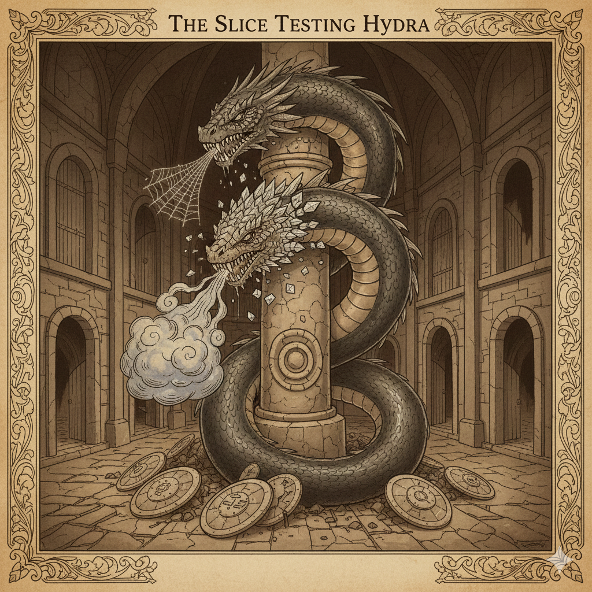
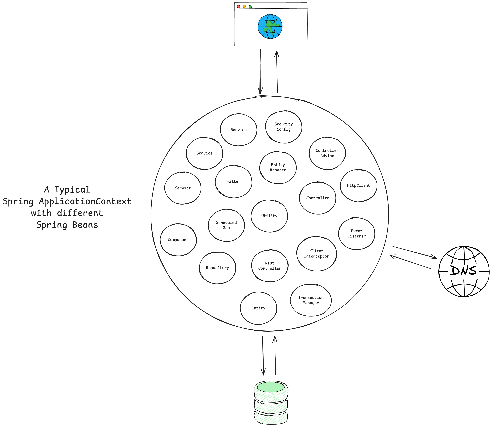
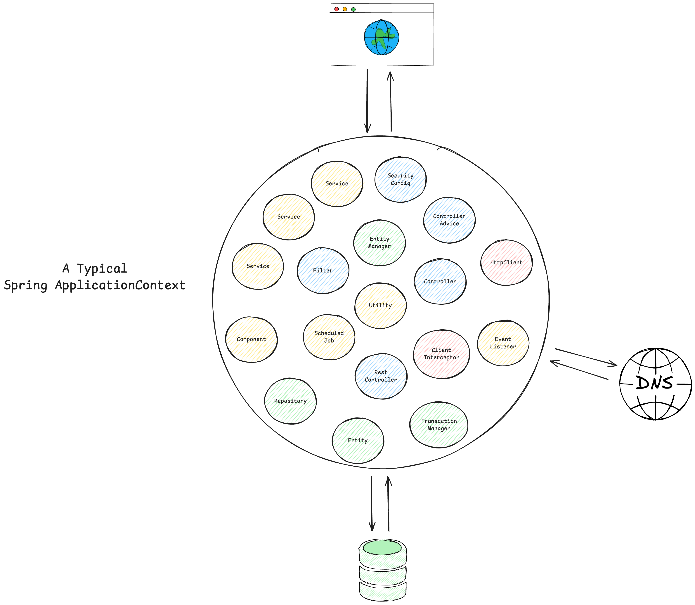
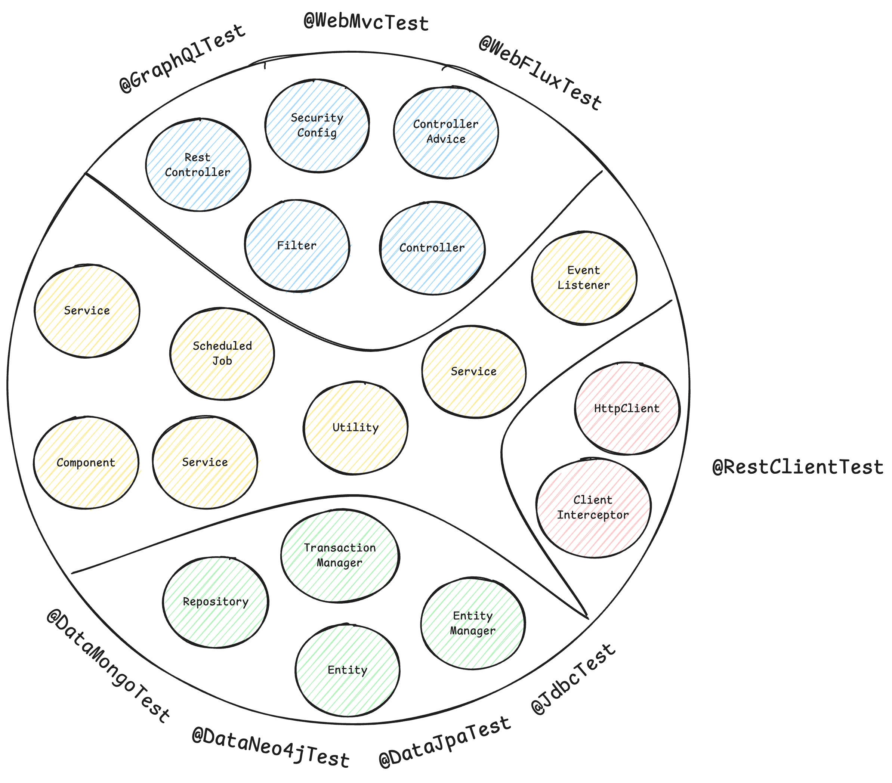
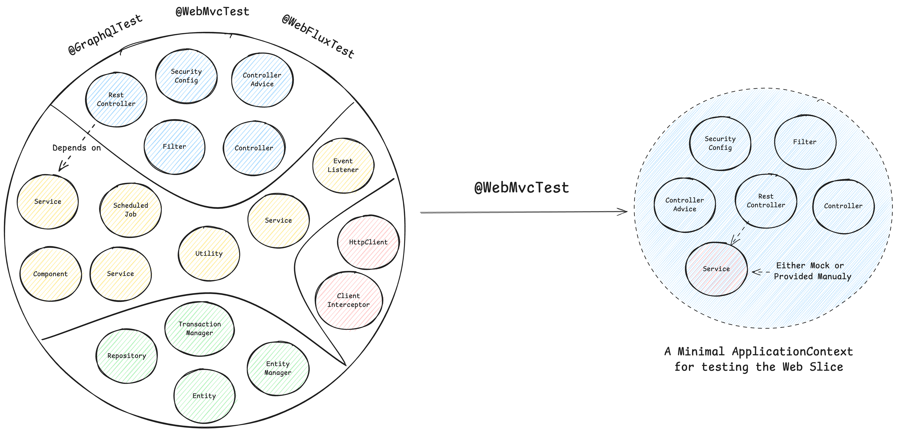
@WebMvcTest@WebMvcTest(CustomerController.class)
@Import(SecurityConfig.class)
class CustomerControllerTest {
@Autowired
private MockMvc mockMvc;
@MockitoBean
private CustomerService customerService;
@Test
@WithMockUser
void shouldReturnLocationOfNewlyCreatedCustomer() throws Exception {
// ...
}
}@WebMvcTest / @WebFluxTest
Controller layer
@DataJpaTest / @JdbcTest
Persistence layer
@JsonTest
JSON serialization / deserialization
@RestClientTest
RestTemplate testing
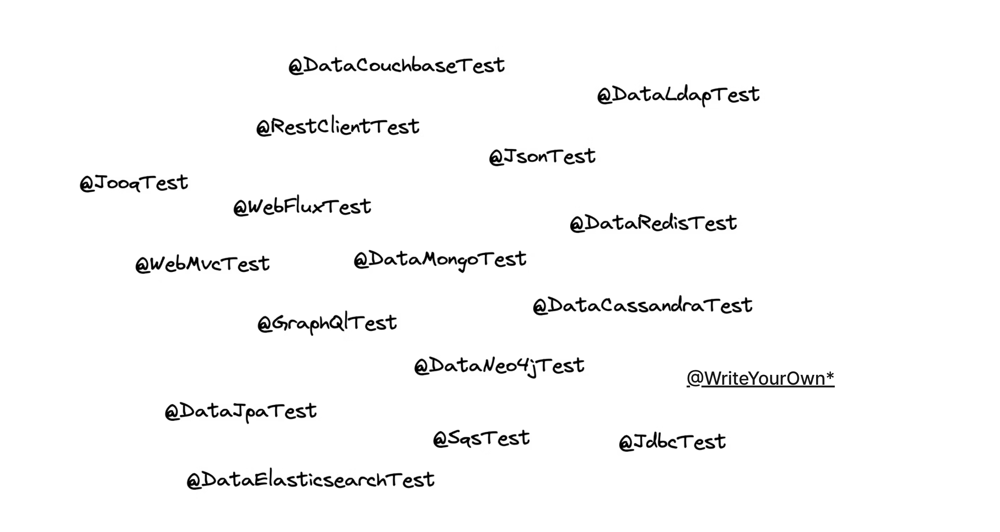
ApplicationContext.
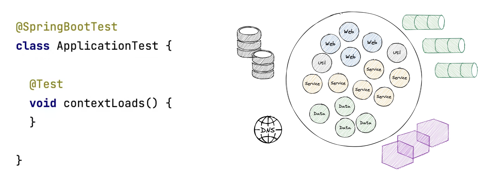
ApplicationContextRunning infrastructure in Docker containers for tests becomes a breeze with Testcontainers:
@Container
@ServiceConnection
static PostgreSQLContainer<?> postgres =
new PostgreSQLContainer<>("postgres:16-alpine")
.withDatabaseName("testdb")
.withUsername("test")
.withPassword("test")
.withInitScript("init-postgres.sql");This gives us an ephemeral PostgreSQL database for our tests:
$ docker ps
CONTAINER ID IMAGE COMMAND PORTS
a958ee2887c6 postgres:16-alpine "docker-entrypoint.s…" 0.0.0.0:32776->5432/tcpConsider WireMock to stub external HTTP services during tests.
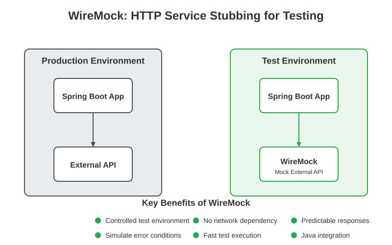
Run as in-memory service or Docker container. Override HTTP clients to connect to WireMock during tests:
TestPropertyValues.of(
"clients.open-library.base-url=http://localhost:"
+ wireMockServer.port())
.applyTo(applicationContext);wireMockServer.stubFor(
get(urlPathEqualTo("/api/books/" + isbn))
.willReturn(aResponse()
.withHeader(HttpHeaders.CONTENT_TYPE,
MediaType.APPLICATION_JSON_VALUE)
.withBodyFile("book-response-success.json"))
);@Transactional, override security with @WithMockUser.
@SpringBootTest
// which is @SpringBootTest(webEnvironment = WebEnvironment.MOCK)
@AutoConfigureMockMvc
class ApplicationMockWebIT {
@Test
@WithMockUser
void givenCustomersThenReturnListForAuthenticatedUser(
@Autowired MockMvc mockMvc) throws Exception {
mockMvc
.perform(get("/api/customers")
.header(ACCEPT, APPLICATION_JSON))
.andExpect(status().is(200))
.andExpect(content().contentType(APPLICATION_JSON))
.andExpect(jsonPath("$.size()", is(1)));
}
}@Transactional rollback, requires HTTP authentication.
@AutoConfigureWebTestClient // required since Spring Boot 4
@SpringBootTest(webEnvironment = WebEnvironment.RANDOM_PORT)
class ApplicationServletContainerIT {
@LocalServerPort
private int port;
@Test
void contextLoads(@Autowired WebTestClient webTestClient) {
webTestClient
.get()
.uri("/api/customers")
.header("Authorization", "Basic " + Base64.getEncoder()
.encodeToString("user:dummy".getBytes()))
.exchange()
.expectStatus()
.isOk();
}
}ApplicationContext, which slows down the buildTestContext Caching — stores an
already started ApplicationContext for reusespring-boot-starter-test)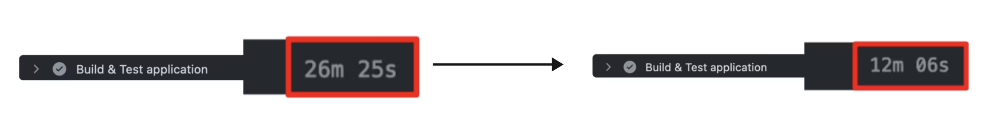
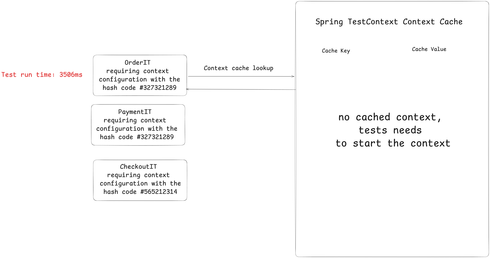
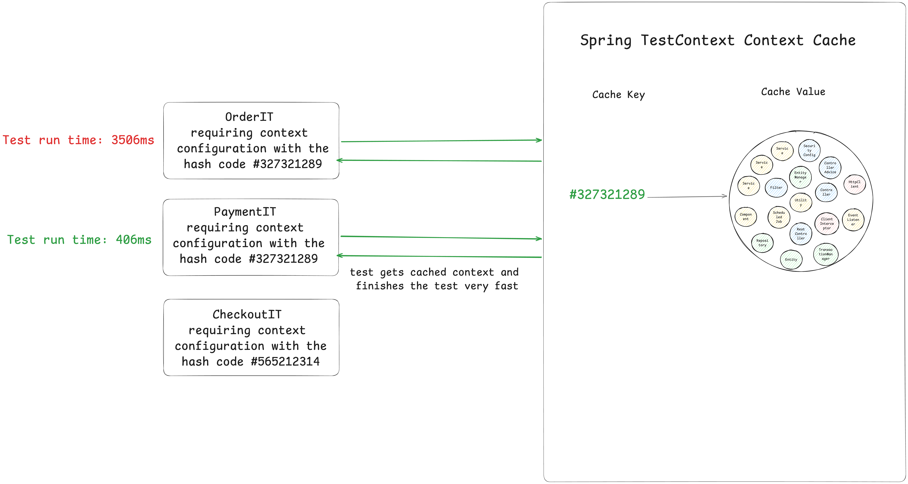
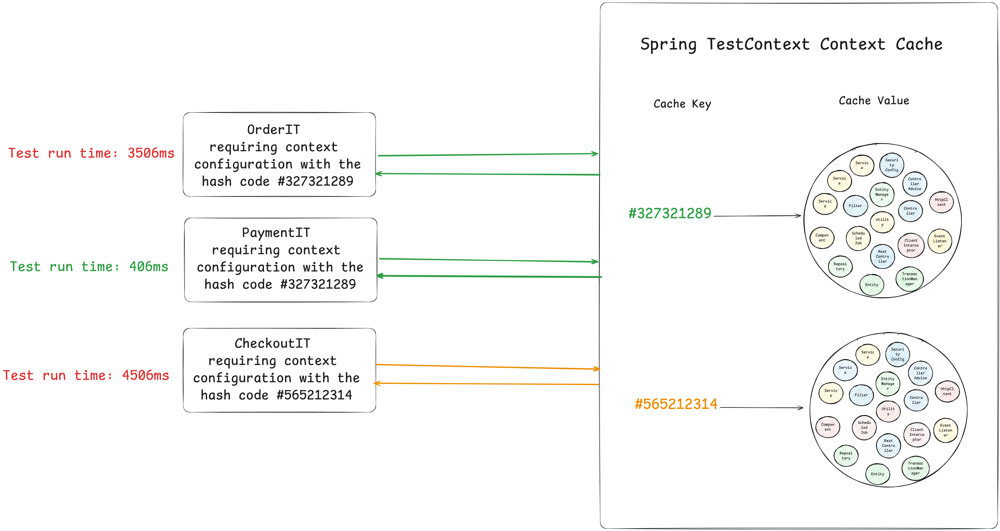
// DefaultContextCache.java
private final Map<MergedContextConfiguration, ApplicationContext> contextMap =
Collections.synchronizedMap(new LruCache(32, 0.75f));The following information is part of the Cache Key (MergedContextConfiguration):
activeProfiles (@ActiveProfiles)contextInitializersClasses (@ContextConfiguration)propertySourceLocations (@TestPropertySource)propertySourceProperties (@TestPropertySource)contextCustomizer (@MockitoBean, @MockBean,
@DynamicPropertySource, ...)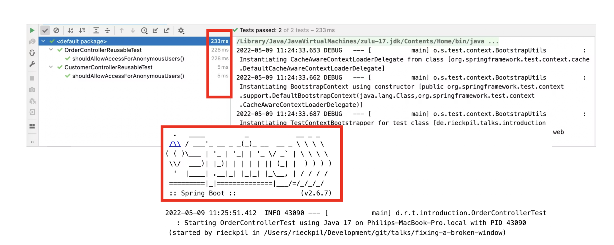
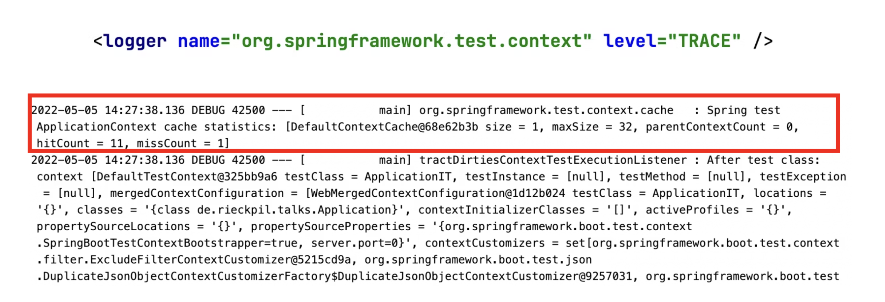
An open-source Spring Test utility that provides visualization and insights for Spring Test execution, focusing on context caching statistics.
Developers tend to consult AI/StackOverflow and copy advice without knowing the implications:
@SpringBootTest
@DirtiesContext
// this instructs Spring to remove the context from the cache
// and rebuild a new context on every request
public abstract class AbstractIntegrationTest {
}See Release Notes from Spring Framework 7:
Pausing of Test Application Contexts
The Spring TestContext framework is caching application context instances within test suites for faster runs. As of Spring Framework 7.0, we now pause test application contexts when they're not used.
This means an application context stored in the context cache will be stopped when it is no longer actively in use and automatically restarted the next time the context is retrieved from the cache.
Goal: Reduce build time and get faster feedback
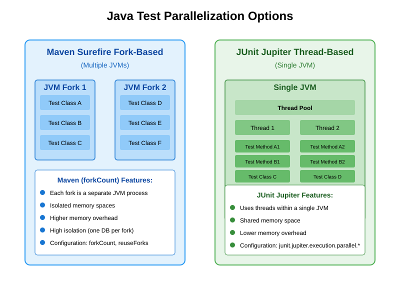
.withReuse(true)@Testcontainers (container per class)private static PostgreSQLContainer<?> postgresModule =
new PostgreSQLContainer<>("myteampostgres:42")
.withDatabaseName("testdb")
.withUsername("testuser")
.withPassword("testpass");
static {
postgresModule.start();
}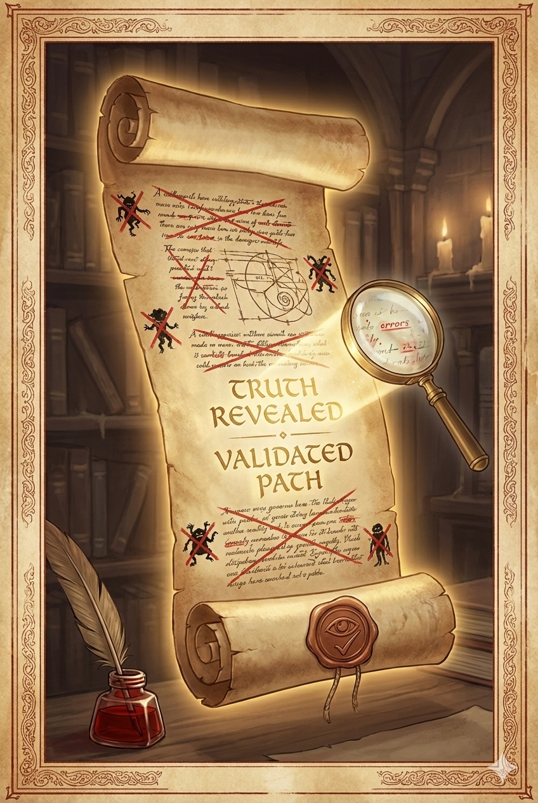
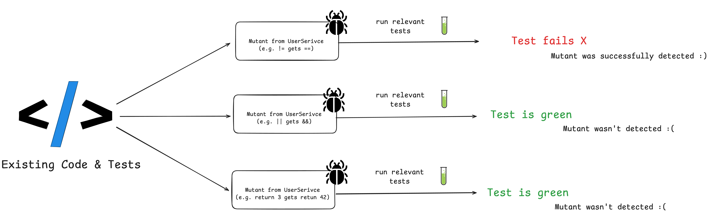
TestRestTemplate / WebTestClient / RestAssured.
testcontainers- prefix for modules, JUnit 4 support removed.
@MockitoBean and @TestBean now work with prototype and custom-scoped beans.
Testing is a team sport — make sure your whole team levels up together
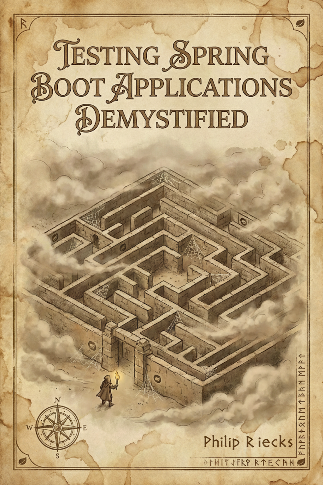
Get your Spring Boot testing eBook:
Now it's time for Q&A!
Reach out any time via: LinkedIn (Philip Riecks) or philip@pragmatech.digital